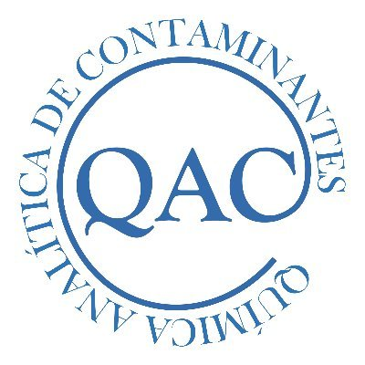
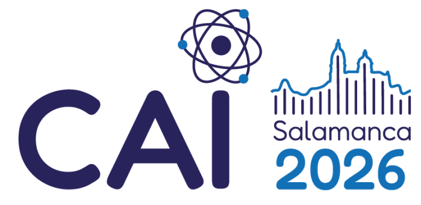

Bienvenido/a al grupo QAC
Gracias por elegirnos
Toca para saltar
ES
EN
Pósteres presentados en

Pósteres del grupo QAC
Elige un póster para verlo o descargarlo
Póster
×
Sin previsualización. Puedes abrir o descargar el PDF.